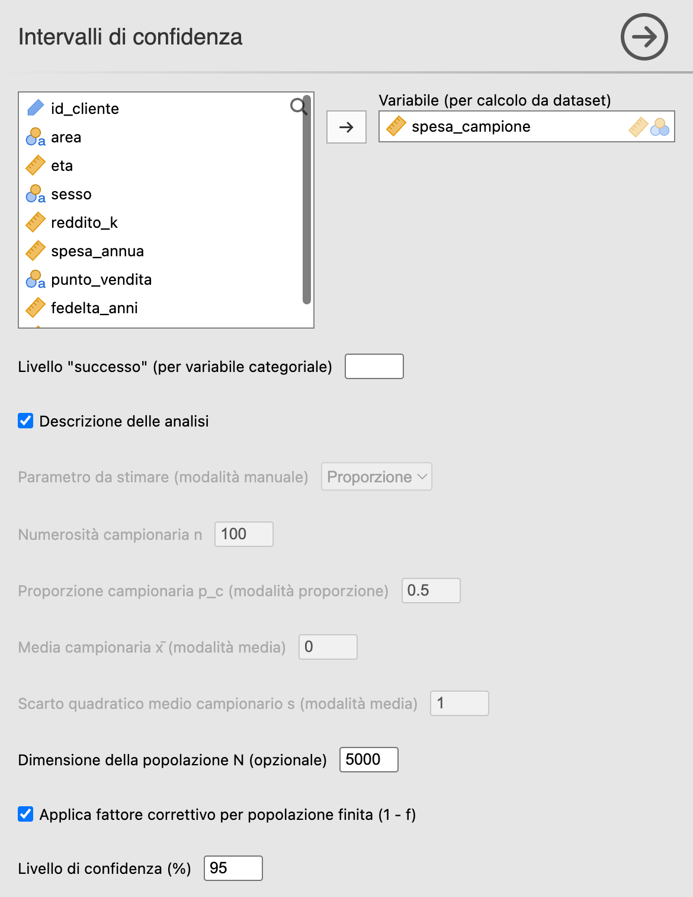
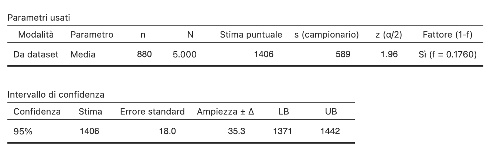

22 Intervalli di confidenza
Menu: Analisi → AnalisiMercato → Campionamento → Intervalli di confidenza
Calcola l’intervallo di confidenza (IC) per una media o una proporzione, in due modalità: a partire dai dati (selezionando una variabile del dataset) o in modalità manuale (inserendo i parametri).
22.1 Quando usarlo
- A fine indagine, per stimare il parametro di interesse.
- Per dimostrare in classe l’effetto del fattore correttivo \((1-f)\) sull’ampiezza dell’IC.
- Per simulazioni didattiche con dati ipotetici.
22.2 Il metodo in breve
22.2.1 Media — intervallo basato sull’approssimazione normale
\[ \bar y \pm z_{1-\alpha/2} \cdot \frac{s}{\sqrt{n}} \cdot \sqrt{1-f} \]
22.2.2 Proporzione (Cochran, eq. 3.13)
\[ \hat p \pm z_{1-\alpha/2} \cdot \sqrt{(1-f)\,\frac{\hat p (1-\hat p)}{n-1}} \]
È la formulazione implementata nel modulo, appropriata come approssimazione per campioni sufficientemente ampi. Nei campioni piccoli, per la media sarebbe più appropriato usare i quantili della distribuzione \(t\) con \(n-1\) gradi di libertà; per la proporzione, intervalli come Wilson o Clopper-Pearson (vedi Errori comuni). Nessuna delle due varianti è implementata in questa analisi.
Il fattore \((1-f)\) è il fattore correttivo per popolazione finita (fpc, finite population correction); nell’intervallo compare sotto radice, \(\sqrt{1-f}\), perché moltiplica la varianza e l’intervallo si costruisce sull’errore standard (SE, standard error). La correzione è pertinente quando si campiona senza reinserimento da una popolazione finita di ampiezza nota. La soglia \(f = 0{,}05\) è una regola pratica diffusa — sotto il 5% l’effetto è di solito piccolo — ma in corrispondenza di quel valore non c’è alcuna discontinuità teorica.
Il denominatore \(n-1\) non è un dettaglio contabile: è ciò che rende la proporzione esattamente il caso particolare della media applicata a una variabile indicatrice \(0/1\). Per una variabile che vale 1 sui successi e 0 sugli insuccessi si ha infatti
\[s^2 = \frac{n\,\hat p(1-\hat p)}{n-1}\]
e quindi
\[\frac{s}{\sqrt n}\sqrt{1-f} \;=\; \sqrt{(1-f)\frac{\hat p(1-\hat p)}{n-1}}\]
Le due formule di questa sezione sono la stessa formula. Verifica da fare in aula: prendete una variabile \(0/1\) del dataset e calcolatene l’intervallo due volte — una leggendola come numerica (il modulo stima la media), una convertendola in fattore e indicando “1” come livello di successo (il modulo stima la proporzione). Gli intervalli coincidono cifra per cifra. Con il denominatore \(n\) non coinciderebbero, e la stessa domanda avrebbe due risposte diverse a seconda di come è dichiarata la variabile.
22.3 L’interfaccia

| Opzione | Default | Note |
|---|---|---|
| Variabile (per calcolo da dataset) | — | Se presente, IC dai dati; se assente, modalità manuale |
| Livello “successo” | “” | Per variabile categoriale (numeratore della proporzione) |
| Parametro da stimare (modalità manuale) | Proporzione | Proporzione / Media |
| Numerosità campionaria n | 100 | Solo in modalità manuale; minimo ammesso 2 (con \(n = 1\) la varianza campionaria non è definita) |
| Proporzione campionaria \(p_c\) | 0,5 | Solo per modalità proporzione |
| Media campionaria / SD | 0 / 1 | Solo per modalità media |
| Dimensione della popolazione N | 1 000 | Attivo solo se si spunta il fattore correttivo |
| Applica fattore correttivo | No | Va attivato consapevolmente, dichiarando la \(N\) reale |
| Livello di confidenza (%) | 95 |
Le due modalità si escludono a vicenda e l’interfaccia lo rende evidente: appena si trascina una variabile nella casella in alto, tutti i campi manuali (\(n\), \(p_c\), media, deviazione standard [SD, standard deviation], parametro) si disattivano, perché quei valori vengono presi dai dati; viceversa, senza variabile si disattiva il campo Livello “successo”.
La casella Applica fattore correttivo è disattivata di default, e il campo \(N\) resta disabilitato finché non la si spunta. È una scelta voluta: con la correzione attiva di default e \(N = 1\,000\) preimpostato, si otterrebbe un intervallo corretto per una popolazione di mille unità senza averlo mai dichiarato. Il caso limite è istruttivo: con \(n = 1\,000\) si avrebbe \(f = 1\), errore standard nullo e un intervallo di ampiezza zero, un risultato apparentemente perfetto e interamente dovuto a un valore predefinito.
Regola operativa: attivate la correzione solo quando (a) state campionando senza reinserimento da una popolazione finita di ampiezza nota e (b) avete sostituito \(N\) con il valore reale del frame. Se attivate la correzione con \(n > N\) il modulo rifiuta il calcolo con un messaggio esplicito, invece di ignorarla in silenzio: è la protezione contro l’errore più frequente, cioè lavorare in modalità “da dataset” (dove \(n\) arriva dai dati) lasciando \(N\) al valore di default.
22.4 Esempio 1 — IC da dataset
Obiettivo. Calcolare l’IC al 95% per la spesa media annua sul campione di 880 clienti estratto in § P-08.
Passi:
- Aprire il
.omvsalvato dopo il campionamento (contiene la colonnafreq_SSR, da campionamento casuale semplice senza reinserimento, SSR). - Costruire la variabile con la spesa dei soli clienti estratti: selezionare la prima colonna vuota a destra di
freq_SSR, scegliere Dati → Calcola e, nell’editor che si apre, scrivere il nomespesa_campionee la formulaIF(freq_SSR == 1, spesa_annua). - Analisi → AnalisiMercato → Campionamento → Intervalli di confidenza.
- Variabile →
spesa_campione. - Spuntare Applica fattore correttivo (è disattivata di default) e impostare N → 5000. Qui \(f = 880/5\,000 = 17{,}6\%\): siamo ben oltre la soglia del 5% e la correzione ha un effetto visibile. Poi Confidenza → 95.
La formula copia la spesa dei clienti estratti e lascia vuote le celle degli altri: è la situazione di un’indagine vera, in cui la spesa si conosce solo per i clienti intervistati. L’analisi ignora le celle vuote e lavora quindi sulle 880 unità del campione.
Un filtro su freq_SSR non si può usare, perché jamovi non accetta filtri sulle colonne prodotte da un’analisi. Né conviene filtrare su una copia della colonna: in jamovi un filtro vale per tutte le analisi del file, e anche il campionamento verrebbe ricalcolato sulle sole 880 righe filtrate, come se fossero l’intera popolazione (\(N = 880\), \(f = 1\)).
Nella tabella Intervallo di confidenza dell’output, le ultime due colonne riportano l’estremo inferiore e superiore dell’intervallo (LB e UB, lower e upper bound).
Parametri usati
| Modalità | Parametro | n | N | Stima puntuale | s (campionario) | z (α/2) | Fattore (1-f) |
|---|---|---|---|---|---|---|---|
| Da dataset | Media | 880 | 5.000 | 1.406,37 | 588,83 | 1,960 | Sì (f = 0,1760) |
Intervallo di confidenza
| Confidenza | Stima | Errore standard | Ampiezza ± Δ | LB | UB |
|---|---|---|---|---|---|
| 95% | 1.406,37 | 18,02 | 35,31 | 1.371,06 | 1.441,69 |
L’Ampiezza ± Δ è \(z \cdot s/\sqrt{n} \cdot \sqrt{1-f}\). Confrontare con l’IC senza fattore correttivo (togliendo la spunta ad Applica fattore correttivo: \(\Delta\) sale a 38,90 e l’IC diventa [1.367,47; 1.445,28]) per vedere quanto si “stringe” l’intervallo grazie al fattore correttivo.

22.5 Esempio 2 — Modalità manuale (esercizio in classe)
Domanda. Un sondaggio su 400 elettori dà \(\hat p = 0{,}38\) di intenzione di voto per il candidato A. Popolazione: 10 000 elettori. IC al 95%?
Configurazione:
- Variabile = (vuota → modalità manuale)
- Parametro = Proporzione
- \(n\) = 400; \(p_c\) = 0,38
- \(N\) = 10 000; fpc = Sì (da spuntare: è disattivata di default)
- Confidenza = 95
\(f = 400/10\,000 = 0{,}04\), quindi \(1-f = 0{,}96\).
\(\text{SE} = \sqrt{0{,}96 \cdot \dfrac{0{,}38 \cdot 0{,}62}{399}} \approx 0{,}02381\)
\(\Delta = 1{,}96 \cdot 0{,}02381 \approx 0{,}0467\)
IC 95% = \([0{,}333;\ 0{,}427]\).
Senza fattore correttivo: \(\text{SE} \approx 0{,}02430\), \(\Delta \approx 0{,}0476\), IC = \([0{,}332;\ 0{,}428]\) — leggermente più ampio. Con \(f = 4\%\) il guadagno è minimo: è la conferma pratica della regola “fpc trascurabile sotto il 5%”.
22.6 Errori comuni
- ❌ Applicare l’IC del casuale semplice a un campione complesso: con stratificato/grappoli/multistadio bisogna correggere per il Design Effect (Deff, § P-15) o usare formule specifiche.
- ❌ Wald per proporzioni estreme (\(p\) vicino a 0 o 1, \(n\) piccolo): IC può uscire da [0, 1]. Per stime estreme usare Wilson o Clopper-Pearson: non sono implementati in questo modulo, ma l’intervallo di Clopper-Pearson si ottiene in jamovi da Frequenze → Test per la Proporzione in un Campione → 2 Risultati (Test binomiale) spuntando Intervalli di fiducia (senza fattore correttivo).
- ❌ Confondere livello di confidenza con probabilità che il parametro stia nell’IC: l’IC è casuale, il parametro è fisso.